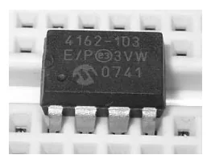
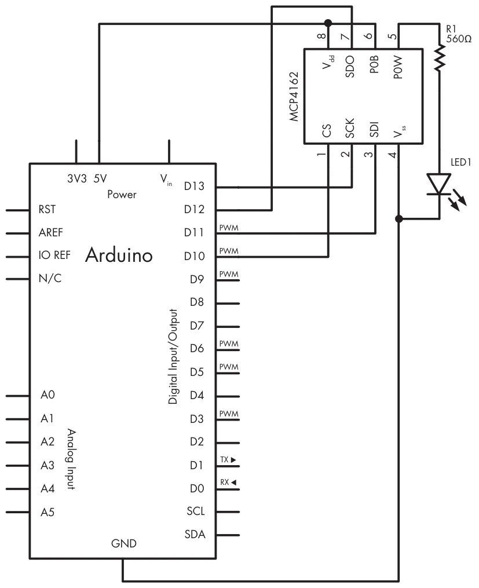

In simple terms, a rheostat device is similar to the potentiometers we examined in Chapter 4, except the rheostat has two pins: one for the wiper and one for the return current. In this project, you’ll use a digital rheostat to set the resistance in the sketch instead of physically turning a potentiometer knob or shaft yourself. Rheostats are often the basis of volume controls in audio equipment that use buttons rather than dials. The tolerance of a rheostat is much larger than that of a normal fixed-value resistor—in some cases, around 20 percent larger.
For Project 56, we will use the Microchip Technology MCP4162 shown in Figure 17-11. The MCP4162 is available in various resistance values; this example uses the 10 kΩ version. It is available from retailers such as Newark (part number 77M2766) and element14 (part number 1840698). The resistance can be adjusted in 255 steps; each step has a resistance of around 40 Ω. To select a particular step, we send 2 bytes of data to a command byte (which is 0) and the value byte (which is between 0 and 255). The MCP4162 uses nonvolatile memory, so once the power is disconnected and later connected, the last value selected is still in effect.

We’ll control the brightness of an LED using the rheostat.
The Hardware
Here’s what you’ll need to create this project:
- Arduino and USB cable
- One breadboard
- Various connecting wires
- One Microchip Technology MCP4162 digital rheostat
- One 560 Ω resistor
- One LED
The Schematic
Figure 17-12 shows the schematic. The pin numbering on the MCP4162 starts at the top left of the package. Pin 1 is indicated by the indented dot to the left of the Microchip logo on the IC (see Figure 17-11).

The Sketch
Enter and upload the following sketch:
// Project 56 - Using a Digital Rheostat
❶ #include "SPI.h" // necessary library
int ss=10; // using digital pin 10 for SPI slave select
int del=200; // used for delaying the steps between LED brightness values
void setup()
{
❷ SPI.begin();
pinMode(ss, OUTPUT); // we use this for the SS pin
digitalWrite(ss, HIGH); // the SS pin is active low, so set it up high first
❸ SPI.setBitOrder(MSBFIRST);
// our MCP4162 requires data to be sent MSB (most significant byte) first
}
❹ void setValue(int value)
{
digitalWrite(ss, LOW);
SPI.transfer(0); // send the command byte
SPI.transfer(value); // send the value (0 to 255)
digitalWrite(ss, HIGH);
}
void loop()
{
❺ for (int a=0; a<256; a++)
{
setValue(a);
delay(del);
}
❻ for (int a=255; a>=0; a--)
{
setValue(a);
delay(del);
}
}Let’s walk through the code. First, we set up the SPI bus at ❶ and ❷. At ❸, we set the byte direction to suit the MPC4162. To make setting the resistance easier, we use the custom function at ❹, which accepts the resistance step (0 through 255) and passes it to the MCP4162. Finally, the sketch uses two loops to move the rheostat through all the stages, from zero to the maximum at ❺ and then back to zero at ❻. This last piece should make the LED increase and decrease in brightness, fading up and down for as long as the sketch is running.